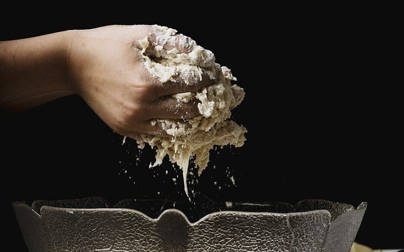
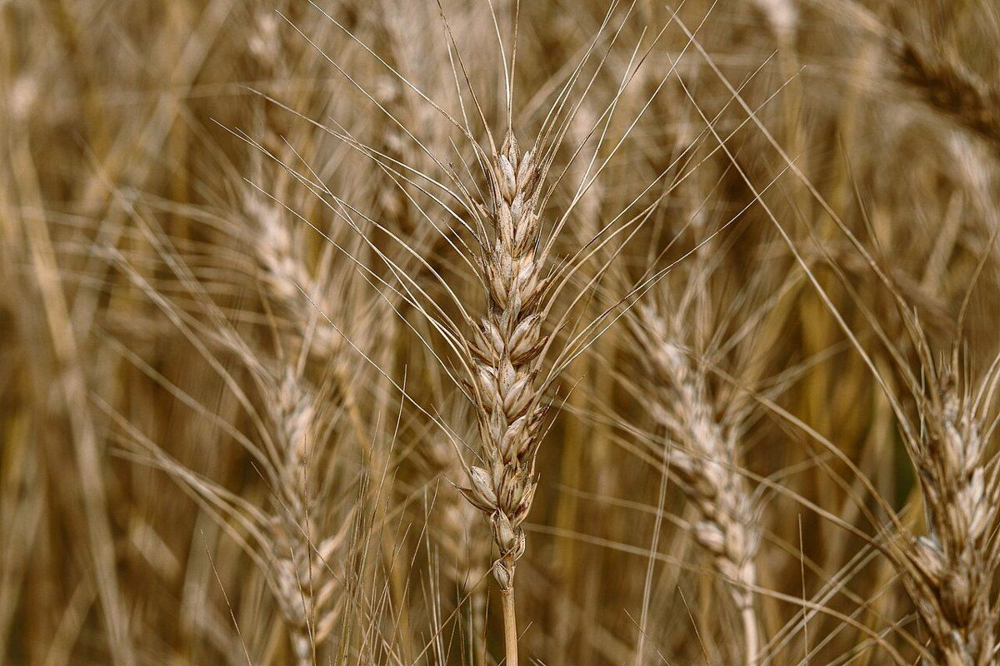
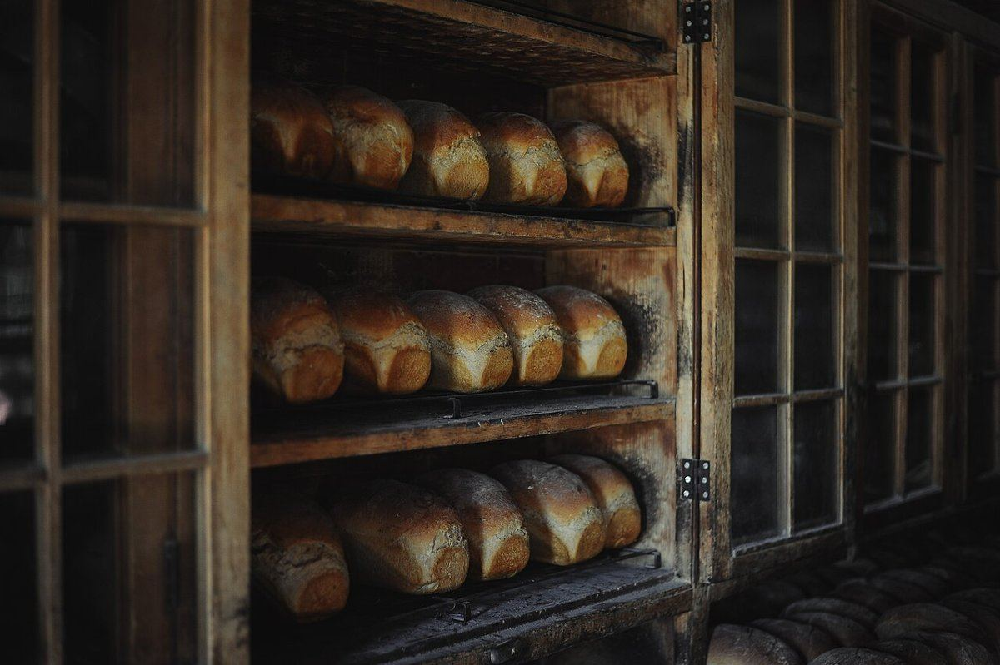

お店について
お店の情報
- 店名
- Pitnuwa (ピトゥヌワ)
- 所在地
- 〒837-0921 福岡県大牟田市三池95-2
- @pitnuwa
- 営業時間
- 準備中(お問い合わせください)
- 定休日
- 準備中(お問い合わせください)
こだわり
こだわりについては準備中です(お問い合わせください)。

スタッフ
準備中(お問い合わせください)
制作側からのコンセプト案
「焼き色の記録帳」は、このサンプルを作った制作側の案です。店舗の理念やこだわりではありません。
お店について分かっていることはまだ多くありません。そこで、確認できた事実を一項目ずつノートに書き足し、まだ分からない項目は空欄のまま「準備中」として残す見せ方にしています。
実際のホームページを作る際は、お店の考えに合わせて、この案を差し替えることができます。

